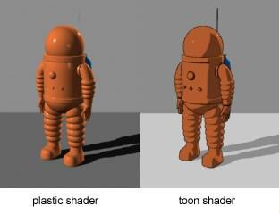

着色器 Shader
渲染Rendering是将模型数据在屏幕上显示出来的过程
可以通过着色器程序对GPU编程来控制渲染，对渲染的结果做修改和后处理，从而实现高级的渲染效果
同样的模型、光源、照相机等条件下，使用不同的着色器可以得到不同的渲染效果

WebGL是基于OpenGL的，而OpenGL使用GLSL(OpenGL Shading Language)这一着色器语言，是一种接近C语言的代码
WebGL支持顶点着色器（Vertex Shader）和片元着色器（Fragment Shader）
着色器代码可以写在单独的文件中（顶点着色器后缀为*.vs，片元着色器后缀为*.fs），也可以定义在<script>标签中
UV映射是将每个面片贴的图统一映射到一张纹理上，记录每个面片贴图在纹理上对应的位置